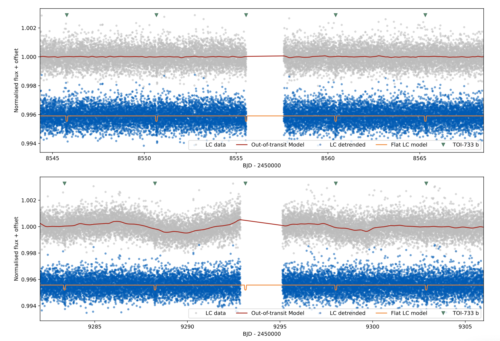

Welcome TESS followers to our latest news bulletin! This week, we are looking at three recent papers from the archive. Enjoy!
Rotation and activity in late-type members of the young cluster ASCC 123 (Frasca et al. 2023) :
ASCC 123 is a young open cluster at a distance of ~240 pc, an age of ~100-200 Myr, E(B − V ) ~ 0.1, and a chemical composition consistent with the local Galactic trend. It was discovered in 2005 and to date contains a few dozen potential cluster members. Frasca et al. (2023) utilized data from TESS, the Osservatorio Astrofisico di Catania, and HARPS to investigate 55 stars in ASCC 123. TESS observed the targets in Sector 16 and 17, and the authors used the corresponding long-cadence SAP/PDCSAP and PATHOS lightcurves. Frasca et al. (2023) measured rotation periods and variation amplitudes for 29 of their 55 targets, and detected a transiting planet candidate around one target. The authors find no clear correlation between the measured rotation periods and amplitudes and infer a gyrochronological age comparable to that of the Pleiades by comparing the corresponding distributions to the color-index. Additionally, Frasca et al. (2023) derive obliquities for 7 targets in their sample covered by spectroscopic observations and, with the caveat that the sample is small, find no compelling evidence for preferred orientation. Based on the respective magnetic activity, the authors note that these 7 stars follow the typical trends for flux-flux diagrams of FGKM stars. Capitalizing on TESS data, Frasca et al. (2023) obtain important new insight into the properties of a relatively-poorly studied young dispersed cluster.
TOI-733 b: a planet in the small-planet radius valley orbiting a Sun-like star (Georgieva et al. 2023) :
TOI-733 is a relatively bright (Tmag = 8.8), nearby (~75 pc) Sun-like star with an age of ~4.4 Gyr. Observed by TESS in Sectors 9 and 36, its lightcurve shows periodic transit-like signals suggesting the presence of a transiting planet. Georgieva et al. (2023) present the discovery and characterization of this planet, TOI-733 b, as part of the KESPRINT program and based on data from TESS, LCOGT, PEST, HARPS, and Gemini. The authors perform a joint modeling of the photometric and spectroscopic data utilizing Gaussian processes to derive the physical and orbital parameters of the system. Their analysis shows that the planet has an orbital period of 4.88 days, radius of 1.99 REarth, mass of 5.72 MEarth, bulk density of 3.98 g/cm3, and slight orbital eccentricity (~0.05). With such a short orbital period, the planet receives ~207 times more incoming stellar flux than the Earth and has an estimated equilibrium temperature of 1055 K. TOI-733 is nearly identical to our Sun, with a radius of 0.95 RSun, mass 0.96 MSun, Teff = 5585 K, [Fe/H]= −0.04+/-0.05, a rotation period of 25.48 days, and a spectral type G6 V. TOI-733 b resides in the transition regime between rocky and volatile-rich planets and, thanks to TESS, provides deeper insight into planet formation and evolution.
Revealing the Binarity of HD 36030 -- One of the Hottest Flare Stars (Maryeva et al. 2023) :
HD 36030 is a B9V star and member of the ASCC 21 open cluster. With an effective temperature of ~12,000 K it is one of the hottest B-type flaring stars and thus a prime target for studying the still-elusive mechanism responsible for the flaring activity of early-type stars. To investigate HD 36030, Maryeva et al. (2023) combined TESS data with follow-up photometry from FRAM-ORM and high-resolution spectroscopy from the Perek 2-m telescopes, as well as archival photometry from Mini-MegaTORTORA. TESS observed the target at a cadence of 30-min in Sector 6 and 10-min in Sector 32 .The lightcurves from both sectors show prominent oscillations, as well as one flare in Sector 6 (with an ~0.6% amplitude) and another in Sector 32 (with an amplitude of ~0.2%). Maryeva et al. (2023) find no coherent periodicity in the photometric variability and measure flare energies of 2.2x1036 erg (Sector 6) and 6.1x1035 erg (Sector 32). The authors detect clear RV modulations in the spectrum of HD 36030, with a scatter of up to 45 km/sec, and argue that it is in fact a binary system with a period shorter than 8 days. They do not detect lines from the secondary component and thus identify the system as an SB1. Maryeva et al. (2023) note that it is unlikely for the assumed late-type binary companion to HD 36030 to produce such highly-energetic flares, and argue that the B9V primary shows no clear signs of surface magnetic activity or unusual spectral features. Thanks to data from TESS, the authors attribute the observed flares to interactions between the two components of the binary system.
Fig. 2: Taken from Frasca et al. (2023). Measured rotation periods for 29 members of ASCC 123 (red symbols) from TESS as a function of the dereddened color index (Gbp-Grp in upper panel, V-Ks in lower panel). The small black symbols indicate measured rotation periods for members of the Pleiades. The lines represent rotational isochrones for 100 Myr, 200 Myr and 500 Myr.
 Fig. 1: Taken from Georgieva et al. (2023). TESS lightcurves for TOI-733 from Sectors 9 (upper panel) and 36 (lower panel). The gray symbols represent the PDCSAP data, and the blue symbols represent the detrended lightcurve (offset vertically for clarity). The green triangles mark the position of the detected transits.
Fig. 3: *Taken from Maryeva et al. (2023). Long-cadence TESS data for HD 36030 from Sectors 6 (upper panels) and 32 (lower panels). Both Sectors show prominent lightcurve variability as well as flares (highlighted in red). *